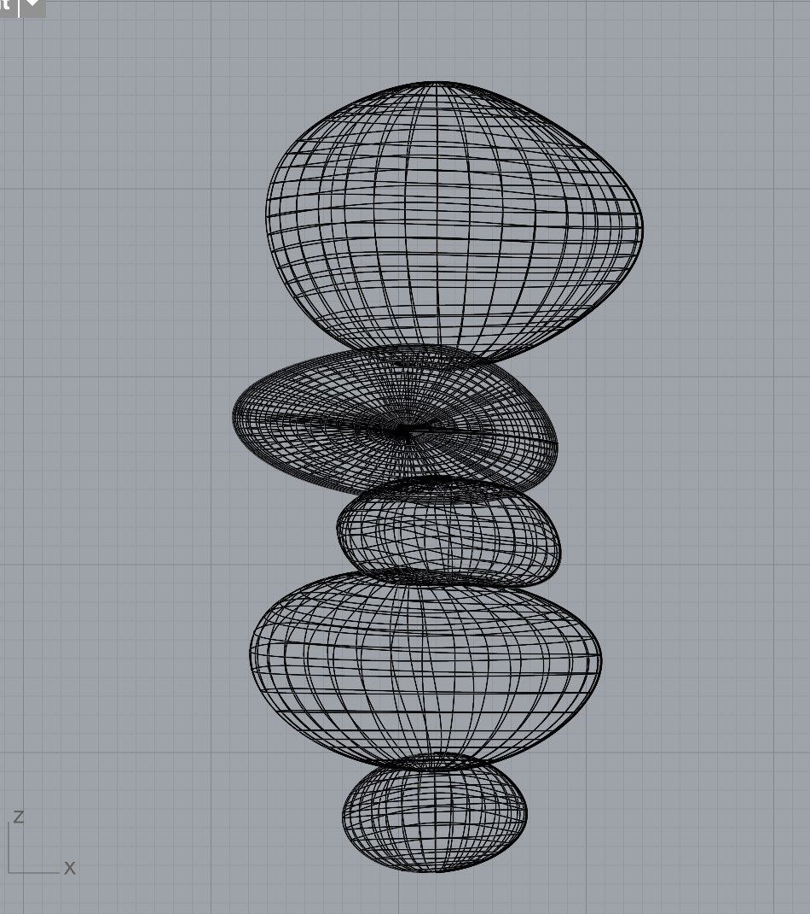
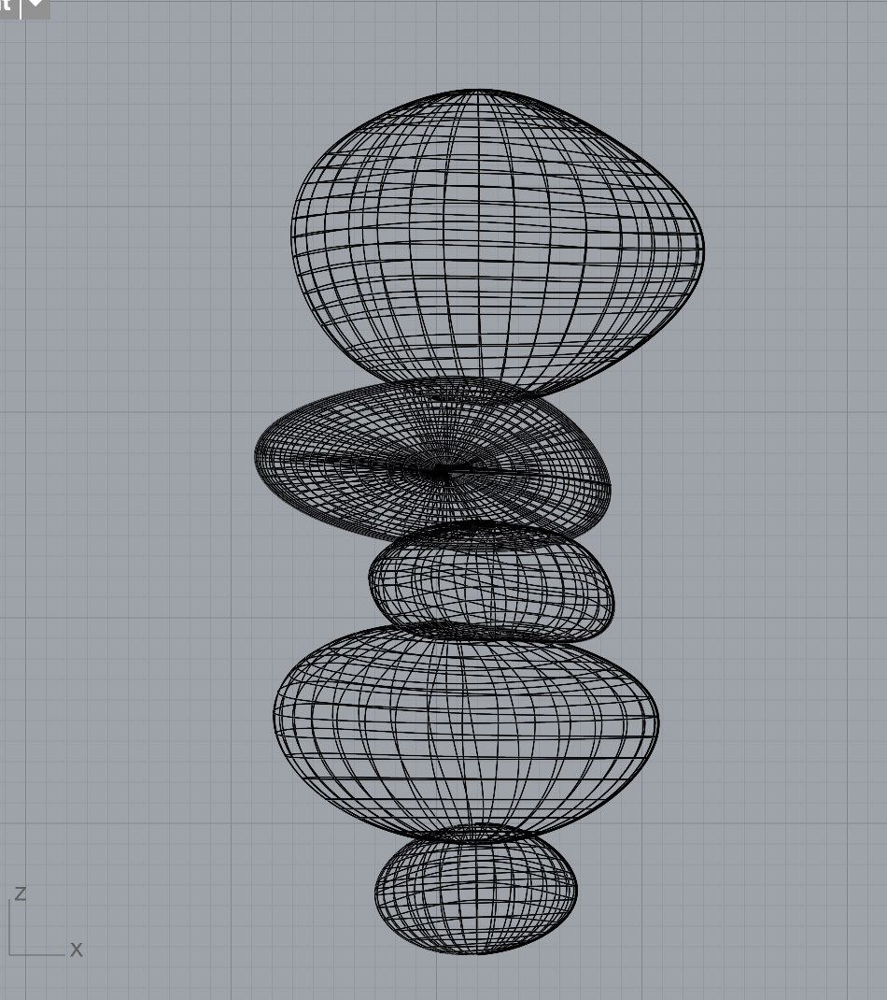
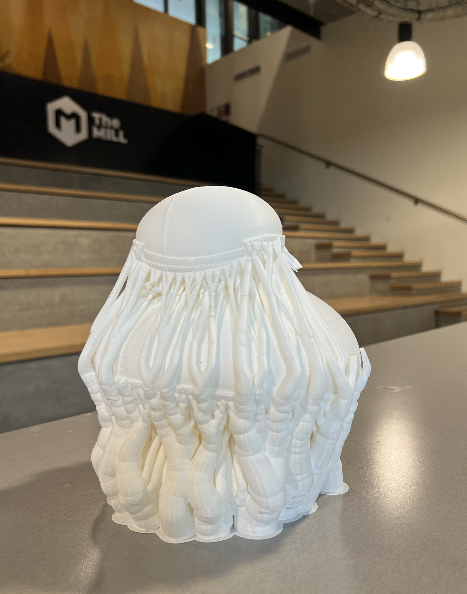
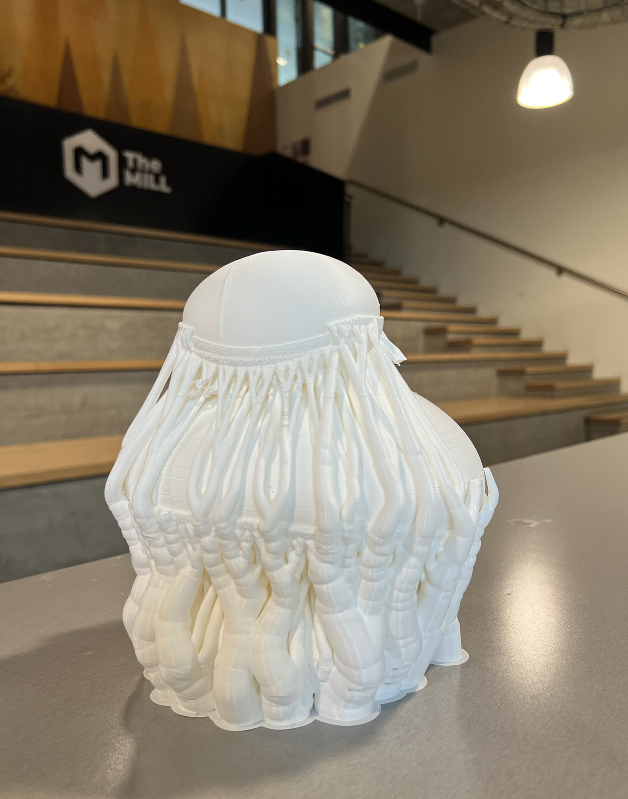
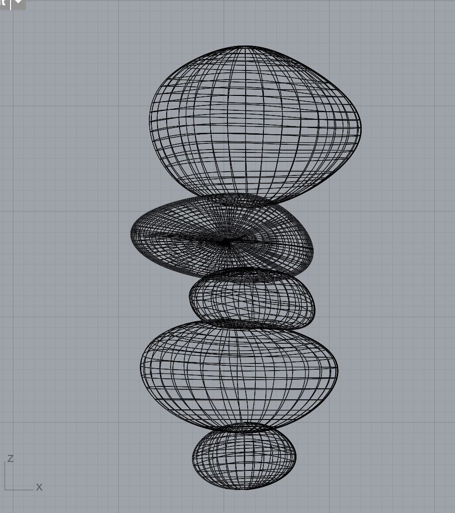
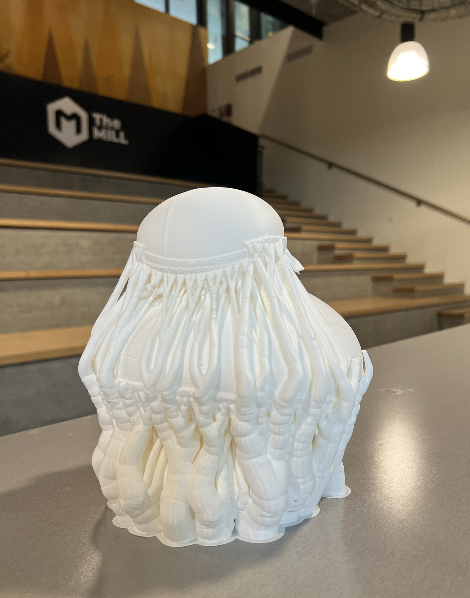
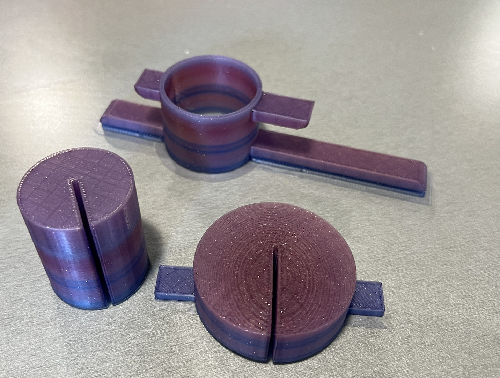

part1: meshes
1/ modify the mesh of two STLs to produce a single printable STL
2/ exporting the STL from Rhino, it should pass all checks for rapid prototyping
1/ modify the mesh of two STLs to produce a single printable STL
2/ exporting the STL from Rhino, it should pass all checks for rapid prototyping
part2: lamps
1/ use lamp innereds' measurements as a point of departure
2/ make a lamp that can be assembled around the innereds
3/ you cannot attach the lamp to the innereds with glue, fasteners, adhesive, etc.
1/ use lamp innereds' measurements as a point of departure
2/ make a lamp that can be assembled around the innereds
3/ you cannot attach the lamp to the innereds with glue, fasteners, adhesive, etc.
+ squirrel mesh and
couch mesh
+ rock lamp CAD
Combining meshes
Initial lamp exploration
Prototyping
creating a rock shape
1/ first design the slots that will be used to fit lamp pieces together
2/ then try to create a hallow lamp shade in the shape of a rock with help from: edit objects with control cage
3/ helpful commands: 'cage edit' --> 'bounding box' and 'offsetSrf' to hallow out the rock
+ rock thickness = 2mm for stability
+ rotating slot tolerance = 0.1mm
4/ I lost the file 😓 so I couldn't edit my test print pieces.
5/ lesson learned to save files more often...


Learnings:
+ 2mm thick lamp was too thick, I could probably go to 1mm or less
+ the tabs on my circular insert need to be thicker to hold the heavy lamp pieces, maybe 4mm instead of 1mm
+ 0.1mm tolerance was perfect!
+ I felt like I want a larger or longer lamp, to create a more dramatic effect...if time permits
+ maybe back to the drawing board
Designing
oh gosh, I went down a deep deep rabbit hole of molding 'rocks' out of spheres and trying to fit them together.
I decided instead of printing 3 separate rock pieces, I'd print two large groups of rocks to produce a longer lamp
and less managing of internal attachments.
The process:
1/ I forgot how I hollowed out my original test rock 😑 so after 6hrs of a lot of mesh troubleshooting, I found this tutorial hollow out a model with Rhino tutorial
2/ rock max size followed the max printing surface for Prusa4: Build Volume 250 x 210 x 220 mm | 9.84 x 8.3 x 8.6 in
3/ I created 5 different rock shapes using 'cage edit'
4/ 'boolean union' the top 2 rocks and the bottom 3 rocks, so they were two separate meshes
5/ 'boolean differenced' the 2 rock meshes to create a hole in the middle for the light to fit through
6/ cut a whole at the top for the lamp to go through (like the sketch)
 


Printing
I basically maxed out the width and depth of the printer area. Thank goodness it all fit.
Learnings
+ I initially added a lot of supports for my first print, but later realized that I didn't need that many supports because my lamp was thicker, so even through there were hanging edges, it would still print okay without falling apart
+ print at 90% speed, helps with object stability
- organic tree supports were a pain to take off, took me 1.5 hrs to remove all of it
+ vertical box supports took me 5min to remove
- lamp thickness = 1.5mm (I still feel like it could of been thinner, but didn't redesign due to time restrictions)
- first rock print took 26hrs @90% speed (with the organic supports)
- second rock print took 19hrs @90% speed (with box supports)
 



test print innards to help stablilize the lamp wires
- wire fitted slot was too small, so adjusted from 3.5mm to 4.75mm
- the radius of the innard piece were too small (I printed these test pieces while the lamps were printing)
- due to time (and brain capacity) I wasn't able to reprint better fitting innards
If I had more time, I would remeasure the diameter of my lamps and print matching innard pieces. But because my prints took about 2 days to print with 1 spool of PLA, I ran out of time to fine tune my connection pieces.
Final
Final lamp turned out better than I expected. The print lines gave the 'rock' shapes a even more organic feel.
I also noticed that I had rocks (that I stole from the olympic coast) on my desk indirectly inpiring me. While I aimed to have a zen lamp vibe, the making of the lamp was far from zen...


+ rock lamp CAD
Combining meshes
I used 'boolean difference' then 'boolean union' to combine the meshes. Then ran 'meshRepair' to check
for issues with the combined meshes.


Initial lamp exploration
Inspired by organic shapes, I wanted to design a simple hanging light enclosed in a round shell.
The lock mechanism would be a simple twist lock.


Prototyping
creating a rock shape
1/ first design the slots that will be used to fit lamp pieces together
2/ then try to create a hallow lamp shade in the shape of a rock with help from: edit objects with control cage
3/ helpful commands: 'cage edit' --> 'bounding box' and 'offsetSrf' to hallow out the rock
+ rock thickness = 2mm for stability
+ rotating slot tolerance = 0.1mm
4/ I lost the file 😓 so I couldn't edit my test print pieces.
5/ lesson learned to save files more often...
Learnings:
+ 2mm thick lamp was too thick, I could probably go to 1mm or less
+ the tabs on my circular insert need to be thicker to hold the heavy lamp pieces, maybe 4mm instead of 1mm
+ 0.1mm tolerance was perfect!
+ I felt like I want a larger or longer lamp, to create a more dramatic effect...if time permits
+ maybe back to the drawing board
Designing
The process:
1/ I forgot how I hollowed out my original test rock 😑 so after 6hrs of a lot of mesh troubleshooting, I found this tutorial hollow out a model with Rhino tutorial
2/ rock max size followed the max printing surface for Prusa4: Build Volume 250 x 210 x 220 mm | 9.84 x 8.3 x 8.6 in
3/ I created 5 different rock shapes using 'cage edit'
4/ 'boolean union' the top 2 rocks and the bottom 3 rocks, so they were two separate meshes
5/ 'boolean differenced' the 2 rock meshes to create a hole in the middle for the light to fit through
6/ cut a whole at the top for the lamp to go through (like the sketch)

Printing
Learnings
+ I initially added a lot of supports for my first print, but later realized that I didn't need that many supports because my lamp was thicker, so even through there were hanging edges, it would still print okay without falling apart
+ print at 90% speed, helps with object stability
- organic tree supports were a pain to take off, took me 1.5 hrs to remove all of it
+ vertical box supports took me 5min to remove
- lamp thickness = 1.5mm (I still feel like it could of been thinner, but didn't redesign due to time restrictions)
- first rock print took 26hrs @90% speed (with the organic supports)
- second rock print took 19hrs @90% speed (with box supports)

test print innards to help stablilize the lamp wires
- wire fitted slot was too small, so adjusted from 3.5mm to 4.75mm
- the radius of the innard piece were too small (I printed these test pieces while the lamps were printing)
- due to time (and brain capacity) I wasn't able to reprint better fitting innards
If I had more time, I would remeasure the diameter of my lamps and print matching innard pieces. But because my prints took about 2 days to print with 1 spool of PLA, I ran out of time to fine tune my connection pieces.

Final
Final lamp turned out better than I expected. The print lines gave the 'rock' shapes a even more organic feel.
I also noticed that I had rocks (that I stole from the olympic coast) on my desk indirectly inpiring me. While I aimed to have a zen lamp vibe, the making of the lamp was far from zen...